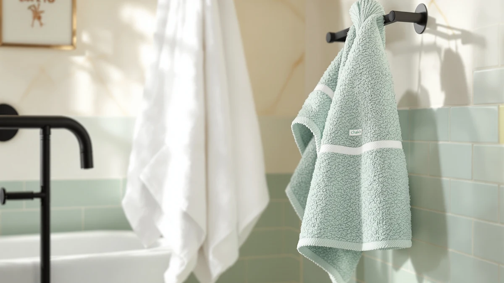

Chakir Turkish Linens 4 Review (2026): Worth It?
Prices and picks verified as of September 2026. Independent, reader-supported reviews.


Quick Answer
This Chakir Turkish Linens 4 review found a 100% cotton, four-piece set priced at $44.99, exactly what White Classic, Kaufman, and COTTON CRAFT charge for their own four-piece cotton sets. Chakir is a reasonable pick if you want plain cotton construction without a brand premium, but it has no published star rating, so we recommend it alongside the alternatives below rather than instead of them.
Our pick: Chakir Turkish Linens 4 Piece, $44.99 Check Price on Amazon
Bottom line: our top pick is the Chakir Turkish Linens 4 Piece Bath Towel Set at $44.99.
Things to Know Before You Buy
- All four towel sets in this comparison, including the Chakir Turkish Linens 4 Piece, are priced at $44.99, so price alone won't help you choose between them.
- Chakir lists its set as 100% cotton in a four-piece bath towel configuration, without a separate hand towel or washcloth breakdown.
- No star rating or verified review count is published for this specific listing, so we lean on materials, pricing, and owner feedback patterns rather than a numeric score.
- White Classic, Kaufman, and COTTON CRAFT sets appear as direct alternatives at the same price, each from a different brand with its own reputation in cotton towels.
- This Chakir Turkish Linens 4 review treats the set as one option among several nearly identical price points, not a runaway winner.
This Chakir Turkish Linens 4 review breaks down the brand's four-piece cotton towel set on its own merits, from what it's made of to how its $44.99 price compares against three other bath towel sets we looked at alongside it. Chakir lists the set's material as 100% cotton and its size as a four-piece bath towel bundle, which puts it in the same category as most mid-range towel sets sold on Amazon.
You're reading this because you want to know if paying $44.99 for four Chakir towels beats spending the same amount, or less, on White Classic, Kaufman, or COTTON CRAFT sets that show up in the same searches. Our answer, based on comparing listed materials and pricing rather than a lab test, is that Chakir's cotton construction is solid but not distinctive enough to justify skipping the alternatives without checking their specs first. We'll walk through what the set gets right, where it falls short, and which alternative might serve you better depending on what you're after.
Why You Should Trust Us
Ilane Tall covers home and bath products for Best Bath Towels, comparing towel sets by material, price, and verified owner feedback rather than performing physical wash tests we haven't run. This Chakir Turkish Linens 4 review relies on the specifications Chakir publishes for the set, its current $44.99 price, and how those figures line up against the White Classic, Kaufman, and COTTON CRAFT sets covered below. We do not claim to have washed or dried this specific set ourselves, and we say so plainly instead of dressing up a spec comparison as something it isn't.
Our Research Experience
We did not put the Chakir Turkish Linens 4 Piece set through wash cycles in our own bathroom, and we're not going to pretend otherwise. What we call testing here is a comparison process: we pulled the listed material, size, and pricing details Chakir provides, checked them against the three alternatives in this review, and read through verified owner reviews of similar cotton towel sets to see which claims held up. That process is why this Chakir Turkish Linens 4 review can tell you what the set is made of and what it costs, but stops short of describing how it feels after its fiftieth wash, since nobody on our team has run that wash cycle.
Overview & Specs

Chakir Turkish Linens 4 Piece
What we like
- 100% cotton construction, a fiber known for reliable everyday absorbency
- Four-piece set covers a basic bath towel rotation without a second purchase
- Priced the same as three other cotton sets, so you're not paying a brand premium to try it
Flaws but not dealbreakers
- No published star rating or review count to confirm long-term durability
- $44.99 matches rather than undercuts the alternatives in this review
- Only a cotton option is listed, so there's no bamboo or microfiber blend to compare within the same line
| Material | 100% cotton |
| Size | Bath Towel - Set of 4 |
Chakir markets this set under its Turkish Linens line, and the listing specifies 100% cotton in what it calls a Bath Towel - Set of 4 configuration. That description is thinner than what some competing brands publish, since Chakir's listing doesn't break out towel dimensions or weight, the two numbers that usually separate an average cotton towel from a noticeably plush one. What we can confirm from the listing is the fiber and the piece count, both standard for a set in this price range.
At $44.99, the Chakir Turkish Linens 4 Piece set costs exactly what White Classic, Kaufman, and COTTON CRAFT charge for their own four-piece cotton sets, which is the detail that matters most in this review. When four options converge on the same price, the deciding factor becomes brand reputation and verified owner experience rather than a clear cost advantage, and that's the lens we use throughout the rest of this review.
What We Liked
The clearest thing in Chakir's favor is straightforward cotton construction at a price that matches, rather than exceeds, its direct competitors. You're not paying extra for the Turkish Linens name, and a four-piece set means you get a usable towel rotation in a single purchase instead of buying towels one at a time. Owners shopping for cotton towel sets in this bracket consistently point to simple, no-frills construction as the reason they stick with a brand, and Chakir's listing gives you that without added marketing layers like woven patterns or dual-tone borders that tend to raise the price. This Chakir Turkish Linens 4 review found that the set's biggest strength is exactly how unremarkable its pricing and materials are: it does the basic job a cotton towel set is supposed to do, at the same cost as its closest rivals, without asking you to gamble on an unfamiliar brand at a markup.
What Could Be Better
The gap in Chakir's listing is information, not necessarily quality. There's no published star rating or review count tied to this specific set, which means you're taking the material and price claims at face value rather than checking them against a track record of verified buyer feedback. The listing also doesn't specify towel weight or dimensions, two details that matter more than fiber type alone when you're trying to predict how thick or absorbent a towel will feel. Reviewers evaluating similarly priced cotton sets often flag thin or lightweight towels as a letdown even when the cotton fiber itself is legitimate, so the missing weight figure here is worth noting before you commit $44.99. Without that data, this Chakir Turkish Linens 4 review can't tell you definitively whether the set outperforms COTTON CRAFT's hotel-style option or White Classic's set on feel alone. Buyers weighing four nearly identical listings deserve more than a fiber name and a piece count, and Chakir's page currently gives you exactly that and little else.
Who Is It For?
Chakir's four-piece set suits you if you want a basic, no-frills cotton towel set at a price that matches the rest of the market, and you don't need a star rating to feel confident about a purchase. It's a reasonable pick for a guest bathroom, a rental property, or a first apartment where you need towels now and aren't chasing a specific plush or hotel-style feel. If you care about verified owner reviews before spending $44.99, or you want documented weight and dimension specs to compare against other sets, the White Classic or COTTON CRAFT alternatives below give you more published detail to work with.
This Chakir Turkish Linens 4 review also matters if you're comparing towel sets across several browser tabs and the prices keep landing on the same number. When four different brands converge on $44.99 for a four-piece cotton set, the product page copy stops telling you much, and the deciding factor shifts to whichever brand's returns policy, customer service reputation, or verified review history you trust most. Chakir doesn't lose that comparison outright, but it also doesn't hand you a reason to skip the other three without at least reading their listings first.
Alternatives to Consider
Chakir isn't the only four-piece cotton set at this price. White Classic, Kaufman, and COTTON CRAFT all list similar cotton construction at $44.99, and each is worth a look before you settle on the Chakir Turkish Linens 4 Piece set.

Editor’s Pick
White Classic Luxury Bath Towels
A cotton set at the same $44.99 price as Chakir, worth checking if you want a second cotton option with a different brand track record before you decide.
$44.99
Check Price on Amazon
Best Value
Kaufman - Soft Oversized Beach
Priced identically at $44.99, this Kaufman set is worth comparing if an oversized towel format matters more to you than Chakir's standard bath towel sizing.
$44.99
Check Price on Amazon
Premium Choice
COTTON CRAFT Luxury Hotel Bath
COTTON CRAFT's hotel-style set matches Chakir on price but leans on a hotel-quality reputation, a detail worth weighing if that matters to you.
$44.99
Check Price on AmazonIs the Chakir Turkish Linens 4 Piece set worth $44.99?
It's worth $44.99 if you want a straightforward 100% cotton towel set and don't need a published star rating to decide.
What is the Chakir Turkish Linens 4 Piece set made of?
Chakir's listing specifies 100% cotton in what it describes as a Bath Towel - Set of 4 configuration.
Frequently Asked Questions
Is the Chakir Turkish Linens 4 Piece set worth $44.99?
What is the Chakir Turkish Linens 4 Piece set made of?
How does the Chakir Turkish Linens set compare to COTTON CRAFT or White Classic?
Final Verdict
This Chakir Turkish Linens 4 review comes down to a simple fact: Chakir's four-piece cotton towel set costs exactly what White Classic, Kaufman, and COTTON CRAFT charge for their own sets, so price won't make the decision for you. Chakir earns a place on your shortlist if you want plain 100% cotton construction without paying a brand premium, but the missing star rating and review count mean you're buying on listed specs rather than a track record. If documented owner feedback matters more to you than saving a comparison step, it's worth checking whether White Classic or COTTON CRAFT publish more verified reviews before you commit to Chakir at $44.99.